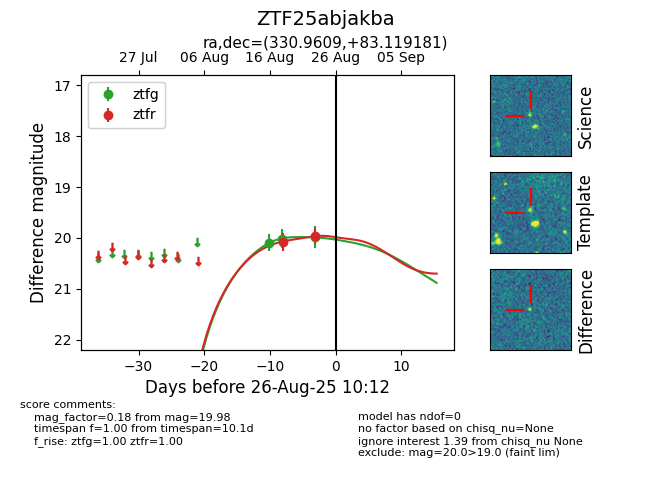

Target ZTF25abjakba at 2025-08-26 10:17, see:
FINK: fink-portal.org/ZTF25abjakba
Lasair: lasair-ztf.lsst.ac.uk/objects/ZTF25abjakba
ALeRCE: alerce.online/object/ZTF25abjakba
alt names
ZTF25abjakba (ztf,fink)
coordinates:
equatorial (ra, dec) = (330.9609,+83.11918)
galactic (l, b) = (117.9844,+21.92150)
photometry
last ztfg=19.98, ztfr=19.96
3 ztfg, 2 ztfr detections
